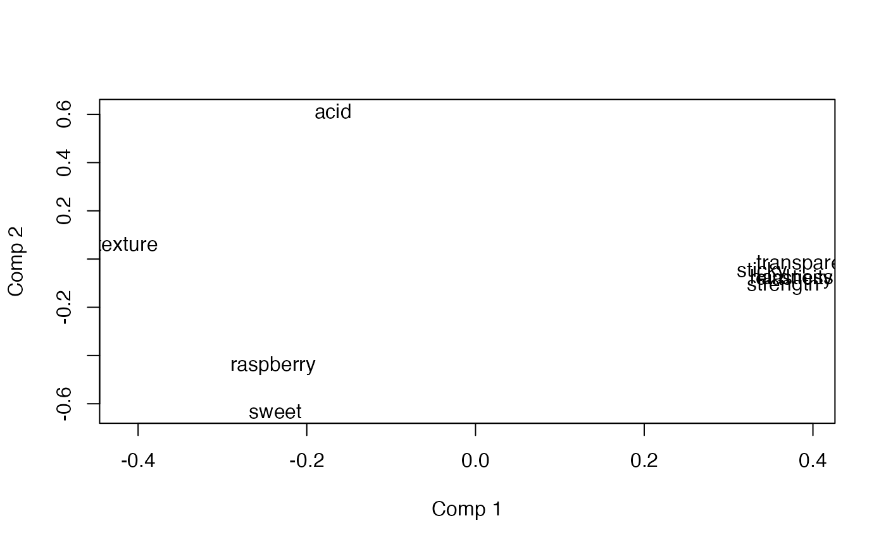
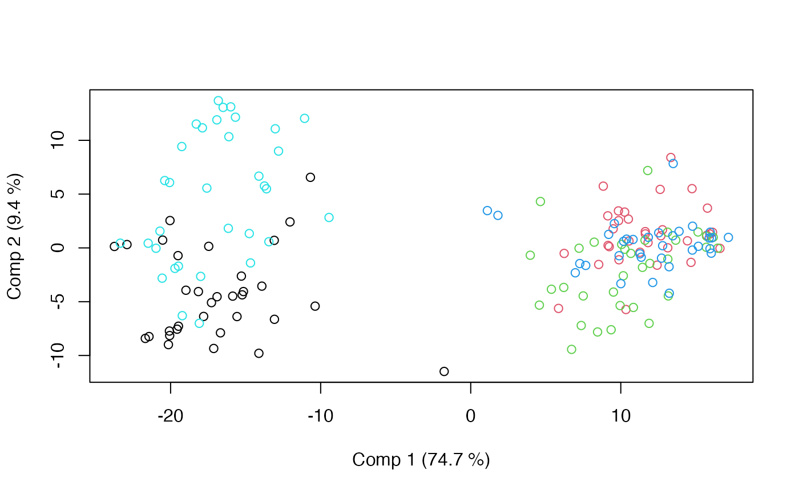

Principal Components Analysis of Variance Simultaneous Component Analysis - PC-ANOVA
Source:R/pcanova.R
pcanova.RdThis is a quite general and flexible implementation of PC-ANOVA.
Value
A pcanova object containing loadings, scores, explained variances, etc. The object has
associated plotting (pcanova_plots) and result (pcanova_results) functions.
Details
PC-ANOVA works in the opposite order of ASCA. First the response matrix is decomposed using ANOVA. Then the components are analysed using ANOVA with respect to a design or grouping in the data. The latter can be ordinary fixed effects modelling or mixed models.
References
Luciano G, Næs T. Interpreting sensory data by combining principal component analysis and analysis of variance. Food Qual Prefer. 2009;20(3):167-175.
See also
Main methods: asca, apca, limmpca, msca, pcanova, prc and permanova.
Workhorse function underpinning most methods: asca_fit.
Extraction of results and plotting: asca_results, asca_plots, pcanova_results and pcanova_plots
Examples
# Load candies data
data(candies)
# Basic PC-ANOVA model with two factors, cross-validated opt. of #components
mod <- pcanova(assessment ~ candy + assessor, data = candies)
print(mod)
#> PC-ANOVA - Principal Components Analysis of Variance
#>
#> Call:
#> pcanova(formula = assessment ~ candy + assessor, data = candies)
# PC-ANOVA model with interaction, minimum 90% explained variance
mod <- pcanova(assessment ~ candy * assessor, data = candies, ncomp = 0.9)
print(mod)
#> PC-ANOVA - Principal Components Analysis of Variance
#>
#> Call:
#> pcanova(formula = assessment ~ candy * assessor, data = candies, ncomp = 0.9)
summary(mod)
#> PC-ANOVA - Principal Components Analysis of Variance
#>
#> Call:
#> pcanova(formula = assessment ~ candy * assessor, data = candies, ncomp = 0.9)
#> $`Comp. 1`
#> Anova Table (Type II tests)
#>
#> Response: assessment
#> Sum Sq Df F value Pr(>F)
#> candy 31470.6 4 780.1762 < 2e-16 ***
#> assessor 224.9 10 2.2304 0.02089 *
#> candy:assessor 707.7 40 1.7545 0.01158 *
#> Residuals 1109.3 110
#> ---
#> Signif. codes: 0 ‘***’ 0.001 ‘**’ 0.01 ‘*’ 0.05 ‘.’ 0.1 ‘ ’ 1
#>
#> $`Comp. 2`
#> Anova Table (Type II tests)
#>
#> Response: assessment
#> Sum Sq Df F value Pr(>F)
#> candy 1573.8 4 33.1604 < 2.2e-16 ***
#> assessor 278.3 10 2.3455 0.0150274 *
#> candy:assessor 1053.3 40 2.2193 0.0005888 ***
#> Residuals 1305.2 110
#> ---
#> Signif. codes: 0 ‘***’ 0.001 ‘**’ 0.01 ‘*’ 0.05 ‘.’ 0.1 ‘ ’ 1
#>
#> $`Comp. 3`
#> Anova Table (Type II tests)
#>
#> Response: assessment
#> Sum Sq Df F value Pr(>F)
#> candy 307.12 4 7.646 1.790e-05 ***
#> assessor 1006.62 10 10.024 8.574e-12 ***
#> candy:assessor 484.02 40 1.205 0.2229
#> Residuals 1104.61 110
#> ---
#> Signif. codes: 0 ‘***’ 0.001 ‘**’ 0.01 ‘*’ 0.05 ‘.’ 0.1 ‘ ’ 1
#>
# Tukey group letters for 'candy' per component
lapply(mod$models, function(x)
mixlm::cld(mixlm::simple.glht(x,
effect = "candy")))
#> $`Comp 1`
#> Tukey's HSD
#> Alpha: 0.05
#>
#> Mean G1 G2
#> 4 11.77480 A
#> 2 11.66764 A
#> 3 10.36430 A
#> 1 -16.83932 B
#> 5 -16.96742 B
#>
#> $`Comp 2`
#> Tukey's HSD
#> Alpha: 0.05
#>
#> Mean G1 G2 G3 G4
#> 5 4.8321239 A
#> 2 1.1912987 C
#> 4 0.3033102 B C
#> 3 -1.9764732 B
#> 1 -4.3502597 D
#>
#> $`Comp 3`
#> Tukey's HSD
#> Alpha: 0.05
#>
#> Mean G1 G2
#> 5 1.2935060 A
#> 3 1.2336431 A
#> 2 0.7696525 A
#> 4 -1.4424540 B
#> 1 -1.8543476 B
#>
# Result plotting
loadingplot(mod, scatter=TRUE, labels="names")

scoreplot(mod)

# Mixed Model PC-ANOVA, random assessor
mod.mix <- pcanova(assessment ~ candy + r(assessor), data=candies, ncomp = 0.9)
scoreplot(mod.mix)
# Fixed effects
summary(mod.mix)
#> PC-ANOVA - Principal Components Analysis of Variance
#>
#> Call:
#> pcanova(formula = assessment ~ candy + r(assessor), data = candies, ncomp = 0.9)
#> $`Comp. 1`
#> Analysis of variance (restricted model)
#> Response: assessment
#> Mean Sq Sum Sq Df F value Pr(>F)
#> candy 7867.65 31470.61 4 649.50 0.0000
#> assessor 22.49 224.92 10 1.86 0.0556
#> Residuals 12.11 1817.00 150 - -
#>
#> Err.term(s) Err.df VC(SS)
#> 1 candy (3) 150 fixed
#> 2 assessor (3) 150 0.692
#> 3 Residuals - - 12.113
#> (VC = variance component)
#>
#> Expected mean squares
#> candy (3) + 33 Q[1]
#> assessor (3) + 15 (2)
#> Residuals (3)
#>
#> $`Comp. 2`
#> Analysis of variance (restricted model)
#> Response: assessment
#> Mean Sq Sum Sq Df F value Pr(>F)
#> candy 393.46 1573.83 4 25.02 0.0000
#> assessor 27.83 278.30 10 1.77 0.0707
#> Residuals 15.72 2358.48 150 - -
#>
#> Err.term(s) Err.df VC(SS)
#> 1 candy (3) 150 fixed
#> 2 assessor (3) 150 0.807
#> 3 Residuals - - 15.723
#> (VC = variance component)
#>
#> Expected mean squares
#> candy (3) + 33 Q[1]
#> assessor (3) + 15 (2)
#> Residuals (3)
#>
#> $`Comp. 3`
#> Analysis of variance (restricted model)
#> Response: assessment
#> Mean Sq Sum Sq Df F value Pr(>F)
#> candy 76.78 307.12 4 7.25 0.0000
#> assessor 100.66 1006.62 10 9.50 0.0000
#> Residuals 10.59 1588.64 150 - -
#>
#> Err.term(s) Err.df VC(SS)
#> 1 candy (3) 150 fixed
#> 2 assessor (3) 150 6.0
#> 3 Residuals - - 10.6
#> (VC = variance component)
#>
#> Expected mean squares
#> candy (3) + 33 Q[1]
#> assessor (3) + 15 (2)
#> Residuals (3)
#>